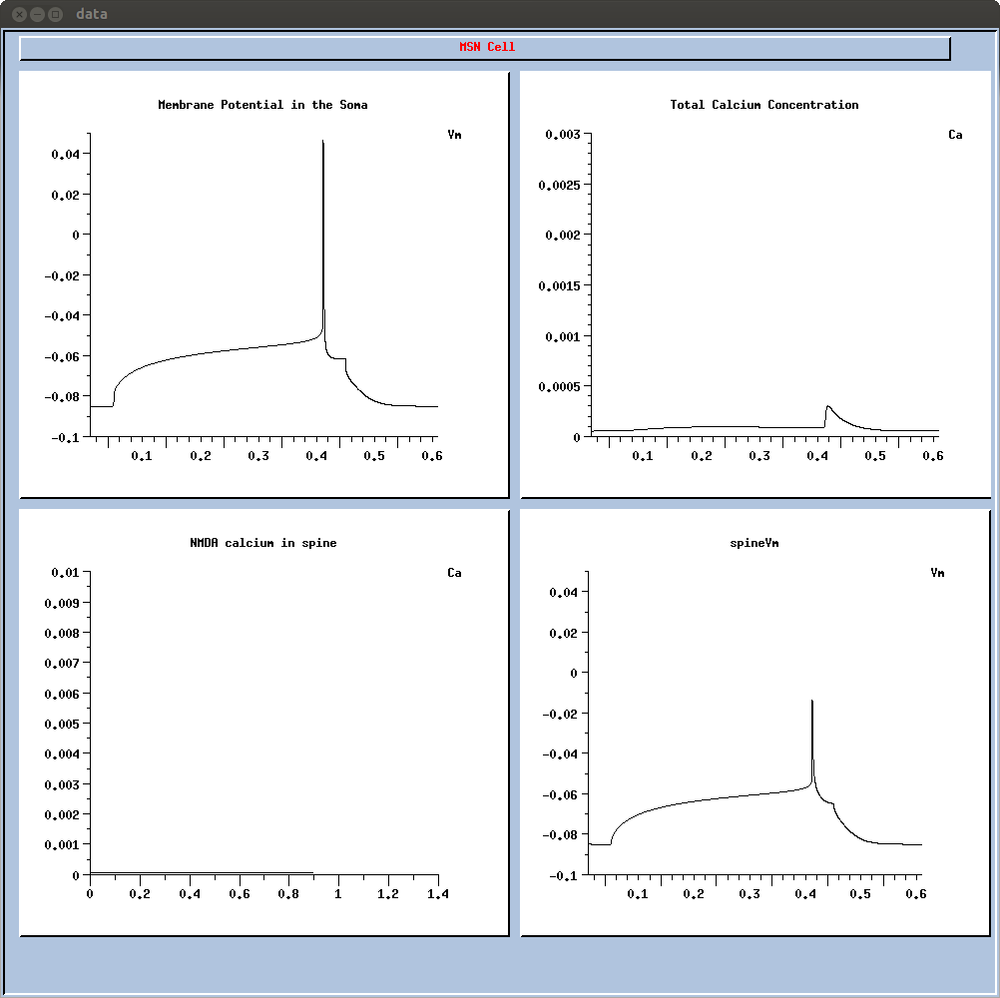

This is the read me file for the dorsal striatum medium spiny projection neuron from: Evans, R.C., Morera-Herreras, T., Cui, Y., Du, K., Sheehan, T., Kotaleski, J.H., Venance, L., and Blackwell, K.T. (2012). The Effects of NMDA Subunit Composition on Calcium Influx and Spike Timing-Dependent Plasticity in Striatal Medium Spiny Neurons. PLoS Comput. Biol. 8, e1002493. Abstract: Calcium through NMDA receptors (NMDARs) is necessary for the long-term potentiation (LTP) of synaptic strength; however, NMDARs differ in several properties that can influence the amount of calcium influx into the spine. These properties, such as sensitivity to magnesium block and conductance decay kinetics, change the receptor's response to spike timing dependent plasticity (STDP) protocols, and thereby shape synaptic integration and information processing. This study investigates the role of GluN2 subunit differences on spine calcium concentration during several STDP protocols in a model of a striatal medium spiny projection neuron (MSPN). The multi-compartment, multi-channel model exhibits firing frequency, spike width, and latency to first spike similar to current clamp data from mouse dorsal striatum MSPN. We find that NMDAR-mediated calcium is dependent on GluN2 subunit type, action potential timing, duration of somatic depolarization, and number of action potentials. Furthermore, the model demonstrates that in MSPNs, GluN2A and GluN2B control which STDP intervals allow for substantial calcium elevation in spines. The model predicts that blocking GluN2B subunits would modulate the range of intervals that cause long term potentiation. We confirmed this prediction experimentally, demonstrating that blocking GluN2B in the striatum, narrows the range of STDP intervals that cause long term potentiation. This ability of the GluN2 subunit to modulate the shape of the STDP curve could underlie the role that GluN2 subunits play in learning and development. Usage: Open Genesis in a Linux environment (also works in Cygwin). To run the model, type "MSsimspine" at Genesis prompt. This makes the cell and a graph, but does not actually run the simulation. To run a simulation type "include if2.g"; at end should see:  This will give a 400ms depolarization resulting in a single spike with a long latency (figure 1B left). If you want to change the depolarization level (to generate other curves from fig 1C left), change the 'inj' parameter in if2.g. To run the 30ms STDP protocols, make the cell and then type "include 30negsec.g"; "include 30posFillin.g"; or "include 30possec.g". Together these run the whole set of deltaTs; the green traces in fig 2B are a subset of those produces by 30posFillin.g. The NMDA calcium in one of the stimulated secondary dendritic spines during these simulations was extracted to make figure 2C (green trace). The deltaT (x axis in Figure 2C) was determined by manually extracting the peak of the AP in each trace and comparing it to the time of the stimulation. To run simulations with a different NMDA subunit (as shown in Figure 3), open MScell/MScellspine.g, and edit the line "include MScell/SynParamsCtx.g" to include SynParamsA.g (for NR2A), SynParamsB.g (for NR2B) etc. If synparamsA are chosen, the NMDA receptor will be "NR2A", while if Synparamsctx is chosen, the NMDA receptor will be called "cortex". In addition, the if2.g simulation will not show any NMDA calcium, be cause it contains no pre-synaptic activity.